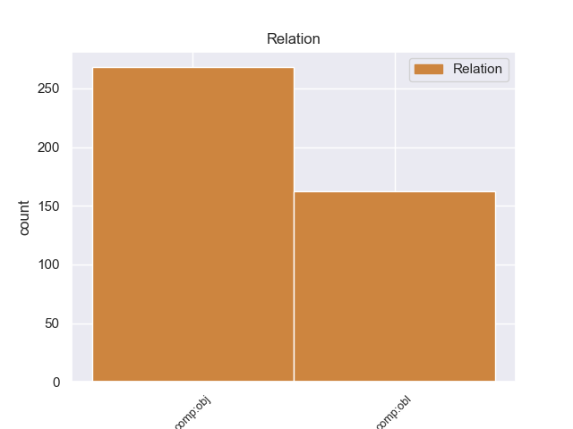
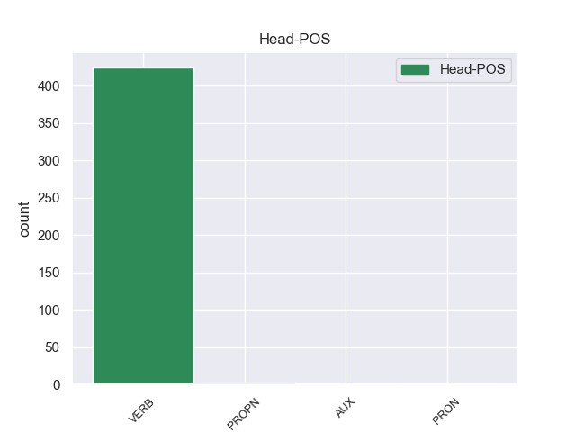
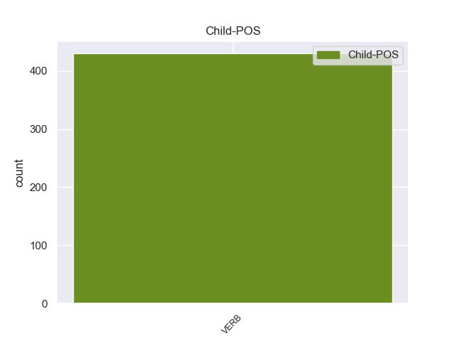

Distribution of features within this leaf



Agreement Rules sorted by frequency.
- When the dependent token is the direct object complements(comp:obj) of the head token, and the dependent token is VERB.
1 πρόκειται πρόκειταί VERB _ Mood=Ind|Number=Sing|Person=3|Tense=Pres|VerbForm=Fin|Voice=Act 0 _ _ _
2 για _ _ _ _ 0 _ _ _
3 αυτό _ _ _ _ 0 _ _ _
4 το _ _ _ _ 0 _ _ _
5 οποίο _ _ _ _ 0 _ _ _
6 αποκαλύφθηκε αποκααμβάνω VERB _ Aspect=Perf|Mood=Ind|Number=Sing|Person=3|Tense=Past|VerbForm=Fin|Voice=Mid 1 comp:obj _ _
7 κατά _ _ _ _ 0 _ _ _
8 τη _ _ _ _ 0 _ _ _
9 διάρκεια _ _ _ _ 0 _ _ _
10 αυτής _ _ _ _ 0 _ _ _
11 της _ _ _ _ 0 _ _ _
12 διαδικασίας _ _ _ _ 0 _ _ _
13 , _ _ _ _ 0 _ _ _
14 ότι _ _ _ _ 0 _ _ _
15 ο _ _ _ _ 0 _ _ _
16 Εισαγγελέας _ _ _ _ 0 _ _ _
17 κάποια _ _ _ _ 0 _ _ _
18 στιγμή _ _ _ _ 0 _ _ _
19 ζήτησε _ _ _ _ 0 _ _ _
20 από _ _ _ _ 0 _ _ _
21 την _ _ _ _ 0 _ _ _
22 Πρόεδρο _ _ _ _ 0 _ _ _
23 του _ _ _ _ 0 _ _ _
24 Σώματος _ _ _ _ 0 _ _ _
25 , _ _ _ _ 0 _ _ _
26 την _ _ _ _ 0 _ _ _
27 προκάτοχό _ _ _ _ 0 _ _ _
28 σας _ _ _ _ 0 _ _ _
29 , _ _ _ _ 0 _ _ _
30 λεπτομέρειες _ _ _ _ 0 _ _ _
31 για _ _ _ _ 0 _ _ _
32 την _ _ _ _ 0 _ _ _
33 ψήφο _ _ _ _ 0 _ _ _
34 που _ _ _ _ 0 _ _ _
35 έχουν _ _ _ _ 0 _ _ _
36 δώσει _ _ _ _ 0 _ _ _
37 οι _ _ _ _ 0 _ _ _
38 δύο _ _ _ _ 0 _ _ _
39 συγκεκριμένοι _ _ _ _ 0 _ _ _
40 βουλευτές _ _ _ _ 0 _ _ _
41 προκειμένου _ _ _ _ 0 _ _ _
42 να _ _ _ _ 0 _ _ _
43 διευκρινιστεί _ _ _ _ 0 _ _ _
44 περαιτέρω _ _ _ _ 0 _ _ _
45 η _ _ _ _ 0 _ _ _
46 πιθανότητα _ _ _ _ 0 _ _ _
47 να _ _ _ _ 0 _ _ _
48 είχαν _ _ _ _ 0 _ _ _
49 ασκήσει _ _ _ _ 0 _ _ _
50 αθέμιτη _ _ _ _ 0 _ _ _
51 επιρροή _ _ _ _ 0 _ _ _
52 . _ _ _ _ 0 _ _ _
1 Θα _ _ _ _ 0 _ _ _
2 ήθελα ήθελος VERB _ Aspect=Perf|Mood=Ind|Number=Sing|Person=1|Tense=Past|VerbForm=Fin|Voice=Act 0 _ _ _
3 να _ _ _ _ 0 _ _ _
4 επιστήσω επιστέω VERB _ Mood=Ind|Number=Sing|Person=1|Tense=Fut|VerbForm=Fin|Voice=Act 2 comp:obl _ _
5 την _ _ _ _ 0 _ _ _
6 προσοχή _ _ _ _ 0 _ _ _
7 όλων _ _ _ _ 0 _ _ _
8 των _ _ _ _ 0 _ _ _
9 συναδέλφων _ _ _ _ 0 _ _ _
10 σ _ _ _ _ 0 _ _ _
11 το _ _ _ _ 0 _ _ _
12 γεγονός _ _ _ _ 0 _ _ _
13 ότι _ _ _ _ 0 _ _ _
14 , _ _ _ _ 0 _ _ _
15 εάν _ _ _ _ 0 _ _ _
16 υπάρχουν _ _ _ _ 0 _ _ _
17 κάποιες _ _ _ _ 0 _ _ _
18 ελευθερίες _ _ _ _ 0 _ _ _
19 οι _ _ _ _ 0 _ _ _
20 οποίες _ _ _ _ 0 _ _ _
21 είναι _ _ _ _ 0 _ _ _
22 ζωτικής _ _ _ _ 0 _ _ _
23 σημασίας _ _ _ _ 0 _ _ _
24 για _ _ _ _ 0 _ _ _
25 την _ _ _ _ 0 _ _ _
26 άσκηση _ _ _ _ 0 _ _ _
27 του _ _ _ _ 0 _ _ _
28 λειτουργήματος _ _ _ _ 0 _ _ _
29 της _ _ _ _ 0 _ _ _
30 δημόσιας _ _ _ _ 0 _ _ _
31 εκπροσώπησης _ _ _ _ 0 _ _ _
32 , _ _ _ _ 0 _ _ _
33 ιδίως _ _ _ _ 0 _ _ _
34 για _ _ _ _ 0 _ _ _
35 ένα _ _ _ _ 0 _ _ _
36 Κοινοβούλιο _ _ _ _ 0 _ _ _
37 σαν _ _ _ _ 0 _ _ _
38 το _ _ _ _ 0 _ _ _
39 δικό _ _ _ _ 0 _ _ _
40 μας _ _ _ _ 0 _ _ _
41 , _ _ _ _ 0 _ _ _
42 η _ _ _ _ 0 _ _ _
43 ελευθερία _ _ _ _ 0 _ _ _
44 της _ _ _ _ 0 _ _ _
45 επικοινωνίας _ _ _ _ 0 _ _ _
46 με _ _ _ _ 0 _ _ _
47 άλλους _ _ _ _ 0 _ _ _
48 πολίτες _ _ _ _ 0 _ _ _
49 και _ _ _ _ 0 _ _ _
50 με _ _ _ _ 0 _ _ _
51 τους _ _ _ _ 0 _ _ _
52 πολίτες _ _ _ _ 0 _ _ _
53 τρίτων _ _ _ _ 0 _ _ _
54 χωρών _ _ _ _ 0 _ _ _
55 , _ _ _ _ 0 _ _ _
56 καθώς _ _ _ _ 0 _ _ _
57 και _ _ _ _ 0 _ _ _
58 η _ _ _ _ 0 _ _ _
59 ελευθερία _ _ _ _ 0 _ _ _
60 μετακίνησης _ _ _ _ 0 _ _ _
61 , _ _ _ _ 0 _ _ _
62 είναι _ _ _ _ 0 _ _ _
63 κρίσιμες _ _ _ _ 0 _ _ _
64 για _ _ _ _ 0 _ _ _
65 τη _ _ _ _ 0 _ _ _
66 διεκπεραίωση _ _ _ _ 0 _ _ _
67 του _ _ _ _ 0 _ _ _
68 έργου _ _ _ _ 0 _ _ _
69 μας _ _ _ _ 0 _ _ _
70 . _ _ _ _ 0 _ _ _
Disagree Examples:
1 Ωστόσο _ _ _ _ 0 _ _ _
2 , _ _ _ _ 0 _ _ _
3 πολλοί _ _ _ _ 0 _ _ _
4 από _ _ _ _ 0 _ _ _
5 εμάς _ _ _ _ 0 _ _ _
6 σε _ _ _ _ 0 _ _ _
7 αυτό _ _ _ _ 0 _ _ _
8 το _ _ _ _ 0 _ _ _
9 Κοινοβούλιο _ _ _ _ 0 _ _ _
10 μεριμνούμε μεριμνω VERB _ Mood=Ind|Number=Plur|Person=1|Tense=Pres|VerbForm=Fin|Voice=Act 0 _ _ _
11 ώστε _ _ _ _ 0 _ _ _
12 η _ _ _ _ 0 _ _ _
13 αρχή _ _ _ _ 0 _ _ _
14 της _ _ _ _ 0 _ _ _
15 αμοιβαίας _ _ _ _ 0 _ _ _
16 αναγνώρισης _ _ _ _ 0 _ _ _
17 να _ _ _ _ 0 _ _ _
18 μην _ _ _ _ 0 _ _ _
19 υπονομεύσει υπονομεω VERB _ Mood=Ind|Number=Sing|Person=3|Tense=Fut|VerbForm=Fin|Voice=Act 10 comp:obj _ _
20 τα _ _ _ _ 0 _ _ _
21 ατομικά _ _ _ _ 0 _ _ _
22 δικαιώματα _ _ _ _ 0 _ _ _
23 των _ _ _ _ 0 _ _ _
24 πολιτών _ _ _ _ 0 _ _ _
25 , _ _ _ _ 0 _ _ _
26 και _ _ _ _ 0 _ _ _
27 σε _ _ _ _ 0 _ _ _
28 αυτό _ _ _ _ 0 _ _ _
29 το _ _ _ _ 0 _ _ _
30 πεδίο _ _ _ _ 0 _ _ _
31 γενικά _ _ _ _ 0 _ _ _
32 είναι _ _ _ _ 0 _ _ _
33 πρωταρχικής _ _ _ _ 0 _ _ _
34 σημασίας _ _ _ _ 0 _ _ _
35 να _ _ _ _ 0 _ _ _
36 τηρούνται _ _ _ _ 0 _ _ _
37 τα _ _ _ _ 0 _ _ _
38 νομικά _ _ _ _ 0 _ _ _
39 εχέγγυα _ _ _ _ 0 _ _ _
40 που _ _ _ _ 0 _ _ _
41 περιλαμβάνονται _ _ _ _ 0 _ _ _
42 , _ _ _ _ 0 _ _ _
43 όχι _ _ _ _ 0 _ _ _
44 μόνο _ _ _ _ 0 _ _ _
45 σ _ _ _ _ 0 _ _ _
46 την _ _ _ _ 0 _ _ _
47 Ευρωπαϊκή _ _ _ _ 0 _ _ _
48 Σύμβαση _ _ _ _ 0 _ _ _
49 για _ _ _ _ 0 _ _ _
50 την _ _ _ _ 0 _ _ _
51 προάσπιση _ _ _ _ 0 _ _ _
52 των _ _ _ _ 0 _ _ _
53 δικαιωμάτων _ _ _ _ 0 _ _ _
54 του _ _ _ _ 0 _ _ _
55 ανθρώπου _ _ _ _ 0 _ _ _
56 , _ _ _ _ 0 _ _ _
57 αλλά _ _ _ _ 0 _ _ _
58 επίσης _ _ _ _ 0 _ _ _
59 , _ _ _ _ 0 _ _ _
60 θα _ _ _ _ 0 _ _ _
61 έλεγα _ _ _ _ 0 _ _ _
62 σ _ _ _ _ 0 _ _ _
63 τον _ _ _ _ 0 _ _ _
64 κ. _ _ _ _ 0 _ _ _
65 Blockland _ _ _ _ 0 _ _ _
66 , _ _ _ _ 0 _ _ _
67 σ _ _ _ _ 0 _ _ _
68 τον _ _ _ _ 0 _ _ _
69 Χάρτη _ _ _ _ 0 _ _ _
70 των _ _ _ _ 0 _ _ _
71 Θεμελιωδών _ _ _ _ 0 _ _ _
72 Δικαιωμάτων _ _ _ _ 0 _ _ _
73 της _ _ _ _ 0 _ _ _
74 ΕΕ _ _ _ _ 0 _ _ _
1 Με _ _ _ _ 0 _ _ _
2 κατηγόρησαν κατηαντάω VERB _ Aspect=Perf|Mood=Ind|Number=Plur|Person=3|Tense=Past|VerbForm=Fin|Voice=Act 0 _ _ _
3 ότι _ _ _ _ 0 _ _ _
4 συμφώνησα συμφώνδω VERB _ Aspect=Perf|Mood=Ind|Number=Sing|Person=1|Tense=Past|VerbForm=Fin|Voice=Act 2 comp:obl _ _
5 όσον _ _ _ _ 0 _ _ _
6 αφορά _ _ _ _ 0 _ _ _
7 σ _ _ _ _ 0 _ _ _
8 το _ _ _ _ 0 _ _ _
9 ευρωπαϊκό _ _ _ _ 0 _ _ _
10 ένταλμα _ _ _ _ 0 _ _ _
11 συλλήψεως _ _ _ _ 0 _ _ _
12 , _ _ _ _ 0 _ _ _
13 τη _ _ _ _ 0 _ _ _
14 στιγμή _ _ _ _ 0 _ _ _
15 που _ _ _ _ 0 _ _ _
16 υποστηρίζω _ _ _ _ 0 _ _ _
17 σθεναρά _ _ _ _ 0 _ _ _
18 τα _ _ _ _ 0 _ _ _
19 ατομικά _ _ _ _ 0 _ _ _
20 δικαιώματα _ _ _ _ 0 _ _ _
21 . _ _ _ _ 0 _ _ _
1 Πιστεύουμε πιστεύω VERB _ Mood=Ind|Number=Plur|Person=1|Tense=Pres|VerbForm=Fin|Voice=Act 0 _ _ _
2 , _ _ _ _ 0 _ _ _
3 εξάλλου _ _ _ _ 0 _ _ _
4 , _ _ _ _ 0 _ _ _
5 ότι _ _ _ _ 0 _ _ _
6 η _ _ _ _ 0 _ _ _
7 υιοθέτηση _ _ _ _ 0 _ _ _
8 ενός _ _ _ _ 0 _ _ _
9 τόσο _ _ _ _ 0 _ _ _
10 επαναστατικού _ _ _ _ 0 _ _ _
11 μέσου _ _ _ _ 0 _ _ _
12 όπως _ _ _ _ 0 _ _ _
13 το _ _ _ _ 0 _ _ _
14 ευρωπαϊκό _ _ _ _ 0 _ _ _
15 ένταλμα _ _ _ _ 0 _ _ _
16 σύλληψης _ _ _ _ 0 _ _ _
17 πρέπει πρέπω VERB _ Mood=Ind|Number=Sing|Person=3|Tense=Pres|VerbForm=Fin|Voice=Act 1 comp:obl _ _
18 να _ _ _ _ 0 _ _ _
19 παρακινήσει _ _ _ _ 0 _ _ _
20 τα _ _ _ _ 0 _ _ _
21 κράτη _ _ _ _ 0 _ _ _
22 της _ _ _ _ 0 _ _ _
23 Ευρωπαϊκής _ _ _ _ 0 _ _ _
24 Ένωσης _ _ _ _ 0 _ _ _
25 να _ _ _ _ 0 _ _ _
26 επιτύχουν _ _ _ _ 0 _ _ _
27 αυτή _ _ _ _ 0 _ _ _
28 τη _ _ _ _ 0 _ _ _
29 βελτίωση _ _ _ _ 0 _ _ _
30 των _ _ _ _ 0 _ _ _
31 δικαστικών _ _ _ _ 0 _ _ _
32 τους _ _ _ _ 0 _ _ _
33 προτύπων _ _ _ _ 0 _ _ _
34 . _ _ _ _ 0 _ _ _
1 Πιστεύουμε πιστεύω VERB _ Mood=Ind|Number=Plur|Person=1|Tense=Pres|VerbForm=Fin|Voice=Act 0 _ _ _
2 , _ _ _ _ 0 _ _ _
3 εξάλλου _ _ _ _ 0 _ _ _
4 , _ _ _ _ 0 _ _ _
5 ότι _ _ _ _ 0 _ _ _
6 η _ _ _ _ 0 _ _ _
7 υιοθέτηση _ _ _ _ 0 _ _ _
8 ενός _ _ _ _ 0 _ _ _
9 τόσο _ _ _ _ 0 _ _ _
10 επαναστατικού _ _ _ _ 0 _ _ _
11 μέσου _ _ _ _ 0 _ _ _
12 όπως _ _ _ _ 0 _ _ _
13 το _ _ _ _ 0 _ _ _
14 ευρωπαϊκό _ _ _ _ 0 _ _ _
15 ένταλμα _ _ _ _ 0 _ _ _
16 σύλληψης _ _ _ _ 0 _ _ _
17 πρέπει _ _ _ _ 0 _ _ _
18 να _ _ _ _ 0 _ _ _
19 παρακινήσει παρακινήσω VERB _ Mood=Ind|Number=Sing|Person=3|Tense=Fut|VerbForm=Fin|Voice=Act 1 comp:obl _ _
20 τα _ _ _ _ 0 _ _ _
21 κράτη _ _ _ _ 0 _ _ _
22 της _ _ _ _ 0 _ _ _
23 Ευρωπαϊκής _ _ _ _ 0 _ _ _
24 Ένωσης _ _ _ _ 0 _ _ _
25 να _ _ _ _ 0 _ _ _
26 επιτύχουν _ _ _ _ 0 _ _ _
27 αυτή _ _ _ _ 0 _ _ _
28 τη _ _ _ _ 0 _ _ _
29 βελτίωση _ _ _ _ 0 _ _ _
30 των _ _ _ _ 0 _ _ _
31 δικαστικών _ _ _ _ 0 _ _ _
32 τους _ _ _ _ 0 _ _ _
33 προτύπων _ _ _ _ 0 _ _ _
34 . _ _ _ _ 0 _ _ _
1 Πιστεύω πιστεύω VERB _ Mood=Ind|Number=Sing|Person=1|Tense=Pres|VerbForm=Fin|Voice=Act 0 _ _ _
2 ότι _ _ _ _ 0 _ _ _
3 το _ _ _ _ 0 _ _ _
4 ένταλμα _ _ _ _ 0 _ _ _
5 για _ _ _ _ 0 _ _ _
6 το _ _ _ _ 0 _ _ _
7 οποίο _ _ _ _ 0 _ _ _
8 εργαζόμαστε _ _ _ _ 0 _ _ _
9 μπορεί μπορεύ VERB _ Mood=Ind|Number=Sing|Person=3|Tense=Pres|VerbForm=Fin|Voice=Mid 1 comp:obj _ _
10 να _ _ _ _ 0 _ _ _
11 είναι _ _ _ _ 0 _ _ _
12 , _ _ _ _ 0 _ _ _
13 τουλάχιστον _ _ _ _ 0 _ _ _
14 , _ _ _ _ 0 _ _ _
15 πρακτικό _ _ _ _ 0 _ _ _
16 και _ _ _ _ 0 _ _ _
17 να _ _ _ _ 0 _ _ _
18 μας _ _ _ _ 0 _ _ _
19 οδηγήσει _ _ _ _ 0 _ _ _
20 σε _ _ _ _ 0 _ _ _
21 θετικά _ _ _ _ 0 _ _ _
22 αποτελέσματα _ _ _ _ 0 _ _ _
23 . _ _ _ _ 0 _ _ _